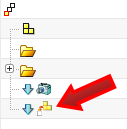
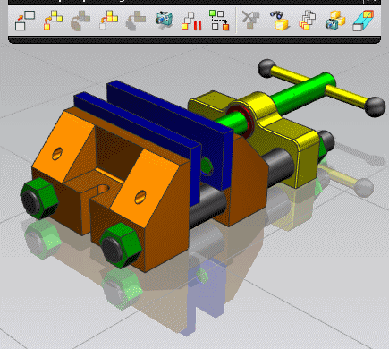
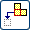

创建拆卸序列
-
在装配工具条上，单击装配序列
 。
。NX 将进入序列环境。
-
在装配序列工具条上，单击新建序列
 。
。 -
(可选)在序列导航器中，选择序列名称节点，然后在“细节”面板中，重命名序列并提供描述。
-
(可选)将不打算在此序列中使用的组件从已预装文件夹拖至忽略文件夹。
被忽略的组件在序列视图中隐藏。
-
(可选)将视图放置在合适位置，以显示第一个组件的拆卸，然后在序列工具工具条上，单击记录摄像位置
 。
。摄像机
 步骤节点显示在序列导航器中。
步骤节点显示在序列导航器中。默认情况下，在步骤列中，第一个节点的编号为10。
-
拆卸单个组件。
-
选择要拆卸的组件。
-
右键单击所选组件，然后选择拆卸。
也可以在序列工具工具条上单击拆卸
 。
。
从显示中移除该组件。

拆卸
 步骤节点显示在序列导航器中。
步骤节点显示在序列导航器中。
-
-
一起拆卸两个或更多组件。
-
选择要拆卸的组件
-
在序列工具工具条上，单击拆卸
。
提示
也可以将组件或子组拖至顶部序列节点，或拖至现有序列步骤之间的任何位置，以创建一个序列步骤。

-
-
拆卸具有运动特征的组件。
-
在序列工具工具条上，单击插入运动
 。
。此时显示记录组件运动对话框条。
-
选择一个或多个要移动的组件。
-
单击鼠标中键。
-
(可选)在记录组件运动对话框条上，单击运动记录首选项
 ，并调整记录选项以满足需求。
，并调整记录选项以满足需求。 -
(可选)单击只移动手柄 ，并将动态 CSYS 移至便于启动运动的位置。
例如，将原始手柄移至旋转中心。
-
单击移动对象 。
也可以通过单击鼠标中键，来激活移动对象按钮。
-
选择一个手柄并移动所选组件。
-
（可选）选择其他手柄，并将此选项以其他方式进行移动。
-
完成运动后，单击拆卸  或确定 以记录运动步骤。
-
完成一步或多步运动后，单击取消
 。
。记录组件运动对话框条将一直保持打开状态，直到您单击取消
。 这也让您无须重新打开对话框条，即可完成一个运动序列。

-
-
完成序列后，在装配序列工具条上，单击完成序列
 。(译者注：在 NX 8.5英文版中，此处的原文为 FInish Sequence，但在中文版中译为精加工序列，很明显是在翻译时把加工应用模块中的精加工(Finish)操作直接搬过来了，这是肯定不对的。此外，在某些版本的完成草图命令中，也有类似的错误，以后出现时将不再赘述。)
。(译者注：在 NX 8.5英文版中，此处的原文为 FInish Sequence，但在中文版中译为精加工序列，很明显是在翻译时把加工应用模块中的精加工(Finish)操作直接搬过来了，这是肯定不对的。此外，在某些版本的完成草图命令中，也有类似的错误，以后出现时将不再赘述。)